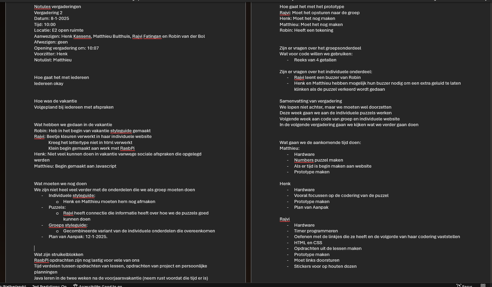
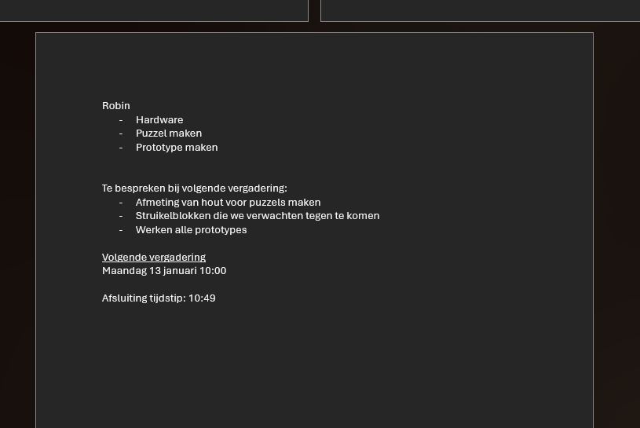
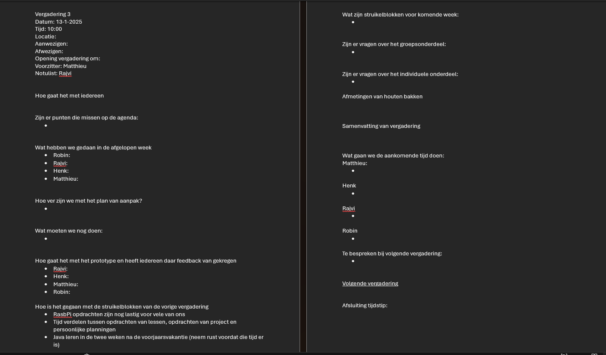

We hebben nu onze eerste les gehad van javascript. Hierin hebben we een basis geleerd van hoe gebruik kunnen maken van javascript bij het maken van buttons waarmee we de layout van de pagina aan kunnen passen zonder de pagina te verlaten. Dit zou misschien voor mijzelf van pas kunnen komen als ik nog een visuele variant wil maken van mijn mario-kart-script. Dat script zorgt er namelijk voor dat je een random karakter, wagen, wielen en glider aangewezen krijgt. Hiermee kan ik bepaalde onderdelen laten randomizen en andere onderdelen niet.
Ook de afgelopen week is het MVP weer een belangrijke geweest. Dit keer niet vanwege de ambities van de groep, maar meer vanwege het feit dat een onderdeel van ons bedachte eindproduct nog niet goed genoeg bleek te zijn volgens sommige docenten. Bart noemde onderdelen van onze escaperoom bijvoorbeeld "te simpel" of "meer een spel dan een puzzel". Hierdoor hebben wij na een kort overleg de puzzels van Robin en Rajvi wat moeilijker gemaakt waardoor de spelers meer moeten nadenken dan dat eerst het geval was.
Ik ben de afgelopen week niet heel veel bezig geweest met nieuwe dingen en ben dus ook niet ergens op vastgelopen. Die dingen zullen in de aankomende week weer komen als we als groep meer met hardware en de websites aan de slag gaan.
Het proces loopt goed. We zijn het als groep vrij snel eens over de dingen die moeten gebeuren en de stappen die we nodig moeten maken.
Zoals ik eerder ook al aangaf zijn er 2 puzzels wat vermoeilijkt aan de hand van de feedback van Bart. De eerste puzzel was eerst dat er na een bepaalde tijd een alarm af zou gaan waarna de speler op 2 knoppen moest drukken om het alarm te stoppen. Deze puzzel heeft nu nog maar 1 knop en er is een vraag aan toegevoegd. Op een klein dashboardje wordt nu een grote set aan woorden gerouleerd. Zodra een woord dat het antwoord is op de vraag is, wordt getoond, moet de speler op de knop drukken. Hierna kan de speler de andere puzzels weer gaan spelen. De andere puzzel Zal een beetje een zelfde concept hebben, alleen moeten de spelers dan een aantal draden losmaken aan de hand van verschillende vragen die ze krijgen bij de puzzel. Deze beslissingen zijn zo genomen om de moeilijkheidsgraad van de puzzels te verghogen waardoor ze nu wel voldoen aan de eisen van de docenten (hopen we)
Vanwege wat persoonlijke omstandigheden heb ik nog geen tijd gehad om de lijst met ideeen te maken waar ik het vorige week over had. Dit hoop ik deze week wel te kunnen doen.
De samenwerking van deze groep blijft sterk aanhouden. Snel beslissingen nemen en veel overleggen op verschillende momenten. Ik ben van mening dat deze groep zomaar de beste groep is van het leerjaar als het gaat om krachtige samenwerking.
Tijdens de lessen hebben we het ook gehad over wat nou een goed spel maakt volgens ons en ook wat de verschillende favoriete spellen zijn va verschillende groepsgenoten. Ik kwam erop uit dat een goed spel: Veel vrijheid geeft aan de speler; de speler persoonlijk verbonden voelt met een spel of met de voortgang die die persoon maakt; het gebruik van dobbelstenen een leuke vorm van geluk geeft. Deze punten zijn allemaal voortgekomen van mijn favoriete spel: Dungeons and Dragons. Als bonus vind ik het zelf heel leuk om het geluid van dobbelstenen over tafel te horen rollen of als je ze beweegt terwijl je ze in je hand houd.
Met andere klasgenoten kwamen we tot de conclusie dat de volgende punten van zeer groot belang zijn; Persoonlijke groei, persoonlijke interactie, geluk dat het spel een beetje onvoorspelbaar maakt
Ik ben bij de vergadering van vorige week notulist geweest en heb mijn gemaakte notulen hieronder bijgevoegd als bewijsstuk. Daarnaast heb ik ook de agenda voor de komende vergadering meegeleverd als bewijs,
  